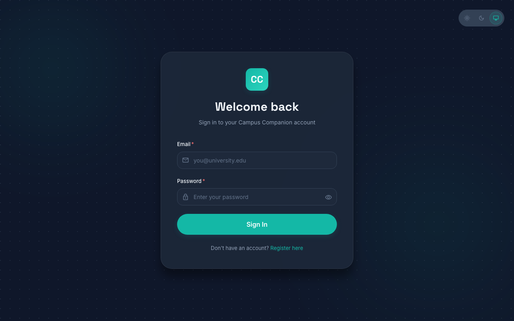
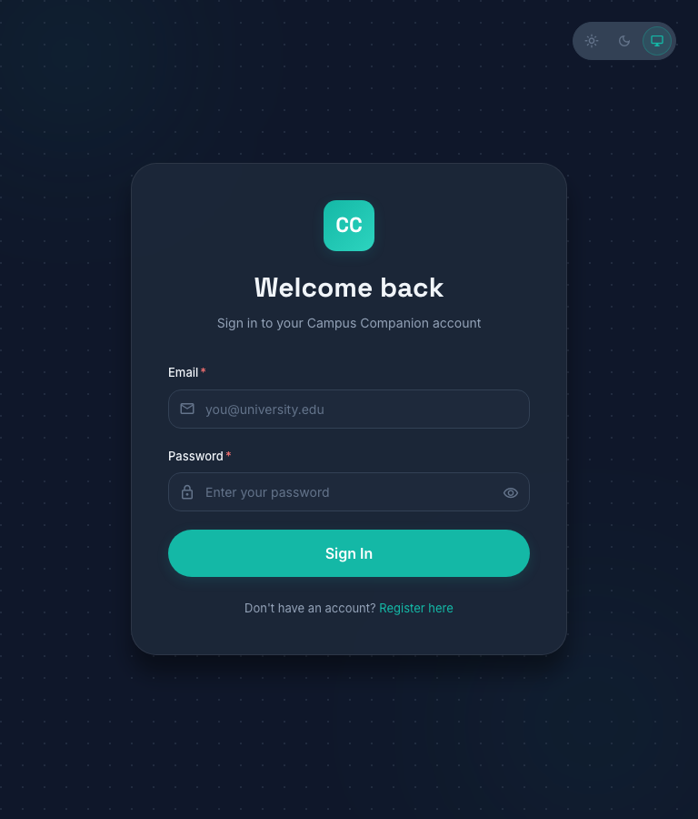

viewport meta tag in the document <head>.width and max-width properties, adapting images to browser width.vw (viewport width) unit in CSS with clamp().Responsive Web Design enables modern web applications to dynamically adapt their layout, typography, and media across a diverse range of device viewports (smartphones, tablets, laptops, and ultra-wide desktops) using a single, unified codebase.
By default, mobile browsers render desktop-optimized websites on a virtual canvas (typically 980px wide) and scale it down. The <meta name="viewport" content="width=device-width, initial-scale=1.0"> directive instructs the mobile rendering engine to set the viewport width directly to the physical screen width (width=device-width) and maintain a 1:1 initial zoom scale (initial-scale=1.0), enabling accurate media query matching and fluid CSS scaling.
frontend/index.html<!doctype html>
<html lang="en">
<head>
<meta charset="UTF-8" />
<link rel="icon" type="image/svg+xml" href="/favicon.svg" />
<!-- ═══ Task I: Viewport Meta Tag for Responsive Design ═══
The viewport meta tag ensures the page scales correctly on all devices.
'width=device-width' sets the viewport width to the device's screen width.
'initial-scale=1.0' sets the initial zoom level to 100%. -->
<meta name="viewport" content="width=device-width, initial-scale=1.0" />
<meta name="description" content="Campus Companion — Smart attendance tracking for college students." />
<title>Campus Companion — Attendance Tracker</title>
</head>
<body>
<div id="root"></div>
<script type="module" src="/src/main.jsx"></script>
</body>
</html>width & max-width)
Using max-width: 100% alongside height: auto guarantees that media elements will never exceed the physical boundaries of their parent container while preserving their intrinsic aspect ratio. For cards and modals, setting width: 100% combined with a constraining max-width (e.g. max-width: 480px) allows containers to stretch on narrow mobile screens while remaining elegantly bounded on large desktops.
frontend/src/styles/index.css & frontend/src/layouts/AuthLayout/AuthLayout.module.css/* ═══ Task II: Responsive Images in Global CSS (frontend/src/styles/index.css) ═══ */
img {
max-width: 100%;
width: auto;
height: auto;
display: block;
}
.responsive-img {
width: 100%;
max-width: 100%;
height: auto;
object-fit: contain;
}
/* ═══ Task II: Responsive Container Card (frontend/src/layouts/AuthLayout/AuthLayout.module.css) ═══ */
.card {
position: relative;
z-index: 1;
width: 100%;
max-width: 480px; /* Constrained on desktop, 100% width on mobile */
margin: var(--space-4);
}vw (Viewport Width) Units
The vw unit represents 1% of the viewport width. Combining vw with CSS clamp(MIN, PREFERRED_VW, MAX) produces fluid typography: text scales smoothly in real time with window resizing without abrupt jumps, while staying safely clamped between accessible minimum and aesthetic maximum font thresholds.
frontend/src/styles/index.css & frontend/src/pages/DashboardPage/DashboardPage.module.css/* ═══ Task III: Fluid Typography using clamp() and vw (frontend/src/styles/index.css) ═══ */
h1 { font-size: clamp(1.75rem, 4vw, 2.25rem); } /* Scales fluidly from 28px to 36px */
h2 { font-size: clamp(1.375rem, 3vw, 1.875rem); } /* Scales fluidly from 22px to 30px */
h3 { font-size: clamp(1.125rem, 2.5vw, 1.5rem); } /* Scales fluidly from 18px to 24px */
h4 { font-size: clamp(1rem, 2vw, 1.25rem); } /* Scales fluidly from 16px to 20px */
/* Responsive large numerical statistics (Dashboard & Cards) */
.stat-number {
font-size: clamp(1.5rem, 3.5vw, 2.5rem);
font-family: var(--font-heading);
font-weight: var(--weight-bold);
}
/* Responsive Stat Values in Dashboard (DashboardPage.module.css) */
.statValue {
font-size: clamp(1.25rem, 3vw, 1.5rem);
font-weight: var(--weight-bold);
line-height: 1;
}
.sectionTitle {
font-size: clamp(1.125rem, 2.5vw, 1.25rem);
font-weight: var(--weight-semibold);
}Media queries (@media) apply conditional CSS rules based on device characteristics such as viewport width. Our Campus Companion application utilizes standard architectural breakpoints (1200px, 1024px, 768px, 640px, 480px) to transition from multi-column grids to optimized stacked mobile layouts.
frontend/src/pages/DashboardPage/DashboardPage.module.css & frontend/src/styles/index.css/* ═══ Task IV: Adaptive Media Query Breakpoints (DashboardPage.module.css) ═══ */
/* Tablet Breakpoint (<= 1024px): 4-column grid transitions to 2-column grid */
@media (max-width: 1024px) {
.statsRow {
grid-template-columns: repeat(2, 1fr);
}
}
/* Mobile Breakpoint (<= 640px): 2-column grid collapses to 1-column single stack */
@media (max-width: 640px) {
.statsRow {
grid-template-columns: 1fr;
}
.subjectGrid {
grid-template-columns: 1fr;
}
.subjectCard {
flex-direction: column;
align-items: center;
text-align: center;
}
}
/* Mobile Breakpoint (<= 768px): Hide desktop sidebar and resize headings */
@media (max-width: 768px) {
.hide-mobile {
display: none !important;
}
h1 { font-size: clamp(1.5rem, 5vw, 2rem); }
}

viewport meta tag to ensure 1:1 hardware pixel scaling on mobile devices.width, max-width: 100%, and height: auto for media.vw units coupled with clamp() for modern fluid typography across all heading and statistical elements.